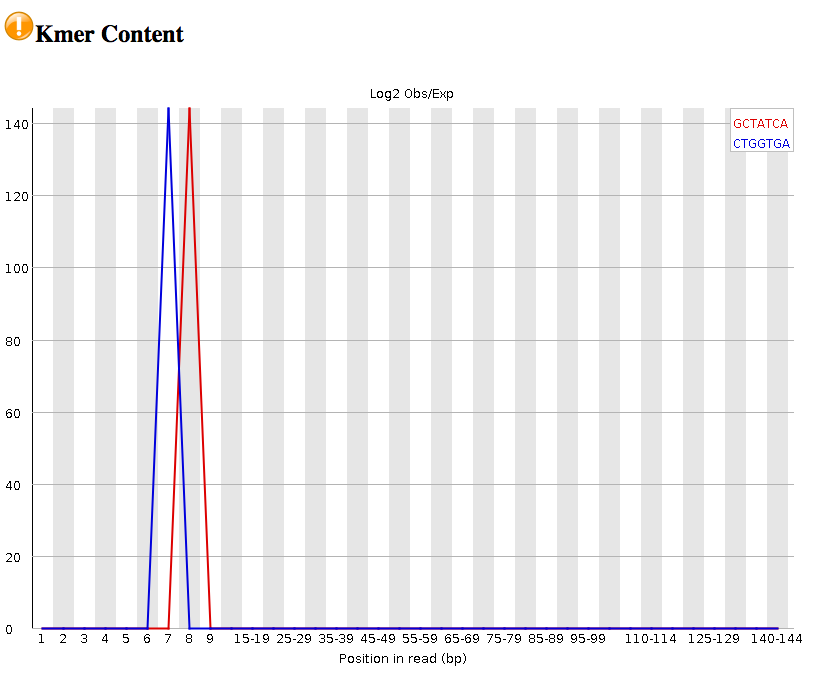

FastQC in Galaxy
After sequencing, the reads should be checked for their quality. This tutorial demonstrates how to use the tool called FastQC to examine bacterial paired-end Illumina sequence reads. The FastQC website is here.
Learning Objectives
At the end of this tutorial you should be able to:
- run FastQC on input sequence reads, and
- examine the FastQC output.
Input files
- We will use the paired-end read set from our Galaxy history.
- These are the files
mutant_R1.fastq andmutant_R2.fastq . - If you don’t have these FASTQ files in your current Galaxy history see how to get them here.
- FASTQ is a file format for sequence reads that displays quality scores for each of the sequenced nucleotides. For more information about FASTQ format see this link.
- We will evaluate the
mutant_R1.fastq reads using the FastQC tool.
Run FastQC
- Go to
Tools → NGS Analysis → NGS: QC and Manipulation → FastQC

- for
Short read data from your current history :mutant_R1.fastq - Click
Execute - In the History pane, click on the “refresh” icon to see if the analysis has finished.
Examine output files
Once finished, examine the output called
Look at:
-
Basic Statistics Sequence length : will be important in setting maximum k-mer size value for assembly.Encoding : The quality encoding type is important for quality trimming software.% GC : high GC organisms don’t tend to assemble well and may have an uneven read coverage distribution.Total sequences : Total number of reads: gives you an idea of coverage.
-
Per base sequence quality : Dips in quality near the beginning, middle or end of the reads: determines possible trimming/cleanup methods and parameters and may indicate technical problems with the sequencing process/machine run. In this case, all the reads are of relatively high quality across their length (150 bp).

-
Per base N content : Presence of large numbers of Ns in reads may point to a poor quality sequencing run. You would need to trim these reads to remove Ns. -
Kmer content : Presence of highly recurring k-mers: may point to contamination of reads with barcodes, adapter sequences etc. In this case, we have spikes in two types of kmers.

We have warnings for two outputs (per base sequence content; Kmer content). This would warrant more investigation.
General questions you might ask about your input reads include:
- How good is my read set?
- Do I need to ask for a new sequencing run?
- Is it suitable for the analysis I need to do?
For a fuller discussion of FastQC outputs and warnings, see the FastQC website link, including the section on each of the output reports, and examples of “good” and “bad” Illumina data.